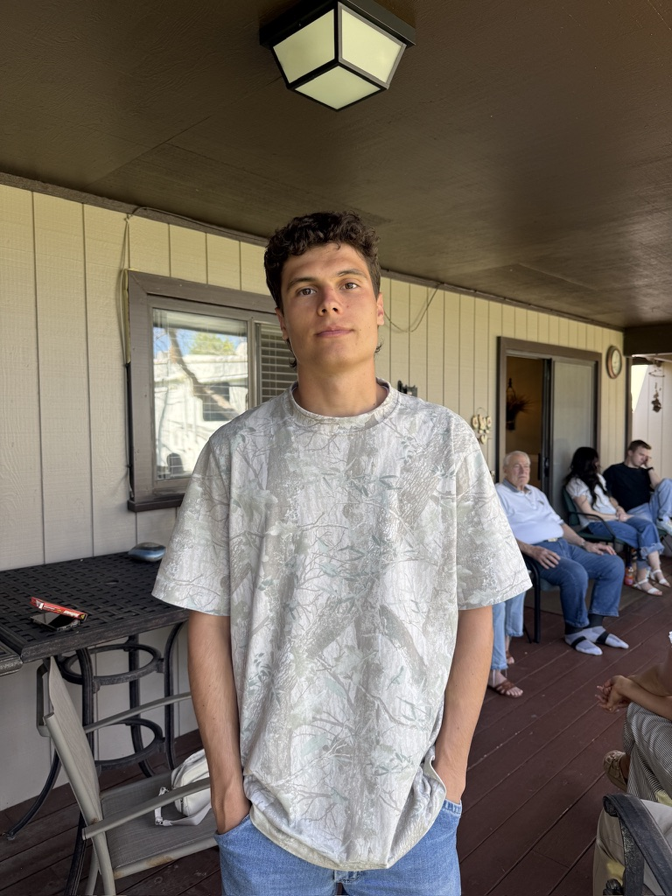

Sales Leader | Team Builder | Growth Focused

I am a driven sales leader with a passion for growth, performance, and continuous improvement. I currently lead a high-performing sales team, focusing on development, systems, and results. As a returned missionary and former athlete, I bring discipline, resilience, and leadership to everything I do. I learn quickly, adapt fast, and stay focused on excellence in every environment. Outside of work, I have a deep love for sports and any outdoor activities that get me moving. I thrive on meeting new people and building meaningful connections. Above all, I love my family and prioritize spending quality time with them.
Email: nathanburdett@gmail.com
Phone: 801-603-4332